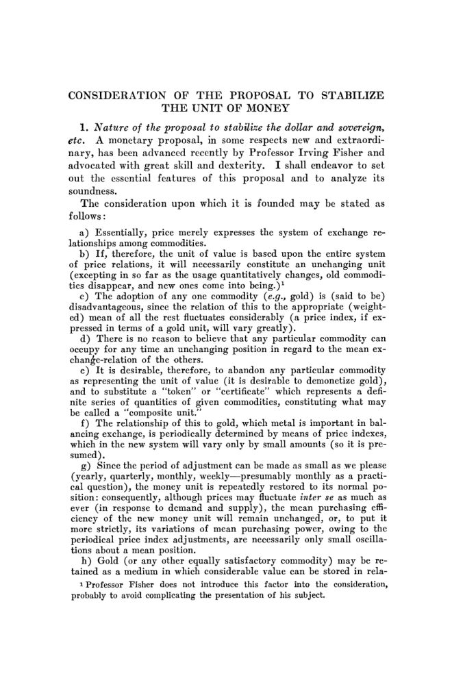

Knibbs e Fisher, 1919: a moeda pode ter poder de compra fixo?
Leitura: 8 min
O estatístico australiano G. H. Knibbs critica o dólar estabilizado de Irving Fisher e propõe corrigir os contratos pelo índice de preços; Fisher responde que só a própria moeda pode carregar essa correção.


Um salário de 100 xelins foi acertado quando o índice de preços estava em 1.200. O índice sobe a 1.500. Para manter o poder de compra, o salário deve passar a 125 xelins. G. H. Knibbs, estatístico de Melbourne, usa a conta para dizer que a reforma monetária proposta por Irving Fisher era desnecessária: bastaria aplicar a mesma regra a salários, depósitos e dívidas, mantendo o ouro como padrão.
A American Economic Review de junho de 1919 publica a crítica de Knibbs e, logo depois, a resposta de Fisher. O debate é sobre um objetivo que os dois aceitam, proteger os contratos das variações do poder de compra, e sobre o lugar onde deve ficar a correção: em cada contrato ou na unidade monetária.
O que Fisher propunha?
Knibbs resume o plano em nove pontos. O preço exprime relações de troca entre mercadorias; uma unidade baseada no conjunto dessas relações seria constante; o ouro, como qualquer mercadoria isolada, varia em relação à média das demais. Logo, o dólar deixaria de ser uma moeda de ouro de peso fixo e passaria a ser um certificado de papel que representa uma cesta de mercadorias. O governo declararia de tempos em tempos quantos grãos de ouro o certificado compra, segundo o índice de preços, com uma pequena taxa de conversão para impedir manobras financeiras.
O nome continuaria o mesmo, dólar nos Estados Unidos, libra esterlina na Grã-Bretanha. Mas, em vez de moedas de ouro, haveria barras carimbadas com peso e toque, que Knibbs compara aos cubos de ouro chineses. Os preços relativos continuariam a variar com oferta e procura; só o poder de compra médio da unidade ficaria estável, com pequenas oscilações em torno de uma posição média.
Quais eram as objeções de Knibbs?
A primeira é que o plano desmonetiza o ouro e, mesmo assim, o deixa numa posição única, porque só ele tem preço declarado oficialmente. As relações de troca entre mercadorias não mudam por se escolher outra referência; o que mudam são os números. A segunda é que a correção de contratos pelo índice, ideia de Jevons, dá exatamente o mesmo resultado, com a vantagem de ser visível. Knibbs lembra que os tribunais de arbitragem australianos já ajustavam salários mínimos assim, embora não de forma automática, e acrescenta que nem todos os pagamentos merecem a correção.
A terceira objeção é contra a linguagem. Fisher falava em roubo involuntário dos poupadores e citava a moça que depositou 100 dólares em 1896 e, em 1918, recebeu 200 que compravam o mesmo que os 100 iniciais. Knibbs responde com um silo: se um fazendeiro deposita 1.000 quintais de trigo e o trigo cai a dois terços do preço, ninguém aceitaria que ele exigisse 1.650 de volta. Quem detém uma mercadoria que perde valor sofre a perda, mas não é enganado.
A quarta objeção é sobre o lastro. Knibbs entende que o plano não prevê guardar nem a cesta nem o ouro contra a emissão excessiva, lembra os assignats franceses e a lei de Gresham, e prevê que o ouro desmonetizado, sem uso monetário, perderia valor.
A escassez real derruba qualquer padrão?
O argumento final de Knibbs é um experimento mental. Num continente isolado, todas as transações se fazem com um papel garantido pelo governo, que representa uma cesta definida. Vem a seca, as colheitas falham, e quem tem mais papel o sacrifica para comprar o que falta: o valor do dólar em mercadorias cai, apesar da estabilização. Com moeda de ouro, aconteceria o mesmo, mas com papel o risco de não voltar ao normal seria maior.
Para Knibbs, a tentativa de criar uma unidade de valor constante é “realmente quimérica”. (“The attempt to create a unit of value which shall be constant is really chimerical”)
Knibbs encerra agradecendo a Fisher por ter levantado a questão e promete mostrar, em outro texto, que há um limite real para o ajuste automático dos pagamentos. O valor de troca, escreve numa nota, depende em última instância da estima, e numa fome as pessoas pagariam qualquer número de dólares estabilizados pela comida.
Como Fisher respondeu?
Fisher começa por lembrar que o plano fora elaborado de forma independente por outros, como Aneurin Williams, J. Allen Smith, D. J. Tinnes e Henry Heaton, e esboçado por Simon Newcomb e Alfred Marshall. Concede que, sem a estabilização, apoia o ajuste de salários por índice, e enumera os casos da guerra: greves resolvidas com aumentos pelo custo de vida, salários mínimos revistos em Oregon e Washington, escalas fixadas pelo War Labor Board e pelo Shipping Board. Se tais ajustes se espalham, argumenta, é porque o poder de compra do dólar precisa de correção.
Fisher afirma que, antes da guerra, o ouro era “mais ou menos tão estável quanto os ovos, e menos que os tapetes”. (“gold was only about as stable as eggs and not as stable as carpets”)
Sobre a equivalência, Fisher responde com a régua elástica: seria possível medir pano com a altura de um barômetro e um multiplicador diário, mas ninguém o faria. A correção externa exige contratos e cálculos especiais, e quem estabiliza só um lado do balanço desestabiliza o lucro. O índice deve estar na unidade, como o horário de verão está no relógio de todos. Os números-índice, acrescenta, tendem a andar juntos qualquer que seja a ponderação, o que enfraquece a objeção de que cada classe precisaria de um índice próprio.
Sobre a justiça, Fisher concorda que ninguém tem queixa contra outra pessoa e muda o plano da discussão: o problema é de justiça social. O comerciante de carne arca com o risco da carne porque é profissional; com o ouro como padrão de todos os contratos, cada usuário de dinheiro vira especulador em ouro sem os meios do especialista.
À fome mundial, Fisher opõe uma hipótese mais provável: a descoberta de grandes quantidades de ouro, como as que se dizia haver na foz do rio Sacramento. E conclui que as objeções de Knibbs, como as da maioria, são emocionais, e não intelectuais: o defeito do novo sistema seria apenas ser novo.
Na minha leitura
Na minha leitura, o debate é menos sobre o diagnóstico do que sobre o custo de transação. Knibbs aceita que a variação do poder de compra transfere riqueza e propõe tratá-la contrato a contrato, escolhendo quais pagamentos corrigir. Fisher aceita que a correção é aritmeticamente equivalente e argumenta que, na prática, só uma convenção universal sobrevive, porque ninguém faz a conta sozinho. O exemplo do horário de verão resume a tese: certos ajustes só funcionam quando todos os fazem ao mesmo tempo.
O ponto mais forte de Knibbs é o choque real. Nenhuma regra monetária protege o poder de compra quando a própria quantidade de bens cai, e a seca hipotética separa bem o que a moeda pode e o que não pode fazer. O ponto mais forte de Fisher é a evidência de uso: a difusão das cláusulas de custo de vida durante a guerra mostra que a demanda por correção existia. Os dois concordam, no fundo, que o índice de preços se tornara um instrumento de política.
Glossário
- Número-índice
- média ponderada de preços em relação a um período-base, usada para medir o nível geral de preços.
- Cesta (composite unit)
- conjunto de quantidades definidas de várias mercadorias cujo valor total a unidade monetária deveria representar.
- Desmonetizar
- retirar de um metal a função de moeda corrente, mantendo-o só como mercadoria ou reserva.
- Lei de Gresham
- tendência de a moeda de maior valor intrínseco sair de circulação quando circula ao lado de outra de menor valor.
- Assignats
- papel-moeda emitido na Revolução Francesa, que se desvalorizou com a emissão excessiva.
Fontes
- Consideration of the Proposal to Stabilize the Unit of Money; Rejoinder by Professor Fisher — G. H. Knibbs (Melbourne, Austrália); Irving Fisher (Yale University) (pp. 244–262). JSTOR · Internet Archive (PDF)
- Edição completa, com os demais artigos: Nº 158 do Arquivo.
Documento em domínio público (EUA, publicado antes de 1931), via JSTOR Early Journal Content e Internet Archive. Resumo e comentário do autor deste site, sem afiliação com a American Economic Association. Encontrou um erro? Escreva: a correção é publicada no próprio texto, com data.
← Os Blakey, 1919: a lei que tributou a guerra depois dela ↑ Nº 158 · A lei da receita de 1918, o dólar estável e a terra do Lácio